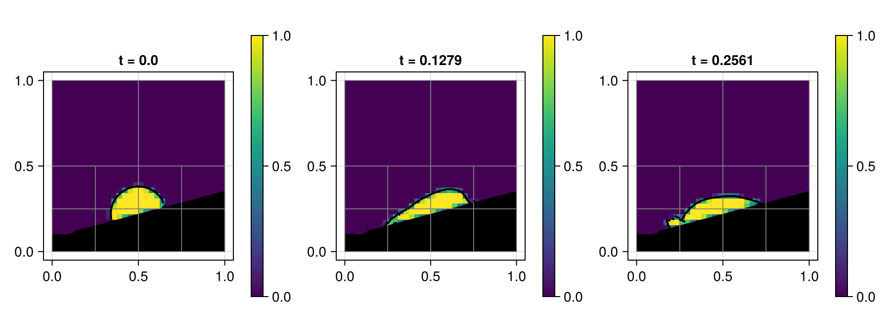
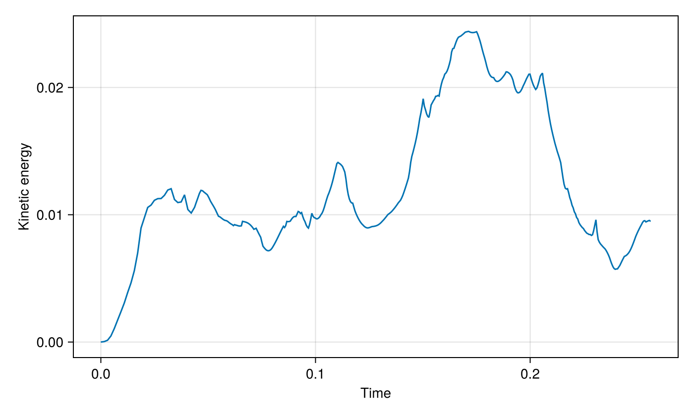

09 – Sloped sessile droplet
A liquid drop relaxes against an inclined embedded wall under capillarity and wall-normal gravity.

At a glance
| Physics | Two phases with densities (1, 0.001), surface tension σ=1, radius R=0.16, Bond number 1.21, Laplace number 550, and embedded contact angle π/2; the nonperiodic unit square uses FreeSlip() domain boundaries. The wall passes through (0.5, 0.22) at angle π/12. |
| Algorithms | One velocity by default, geometric WY VOF transport, :lhf PLIC reconstruction with WY fallback, CGFM surface tension, Lax–Wendroff momentum advection and implicit-midpoint viscosity. Pressure and two-phase diffusion use CG with tree-geometric multigrid. Interface, curvature (8 cells per radius), and embedded-geometry indicators drive AMR; attempts occur every 2 steps with coarsen delay 2. |
| Worth varying | wall_angle=π/12 rotates both wall and gravity; bond=1.21 changes gravity; laplace=550 changes viscosity; density_ratio=1000 changes gas density and capillary time; contact_angle=π/2 changes the initial cap and wall curvature condition; max_level=2 changes the AMR ceiling; final_time=nothing selects four capillary times; visualize=false disables the viewer. |
| Validated against | Liquid volume should remain constant: :phase_volume changes by 1.00403e-11 at docs size. The final volume-weighted :divergence_norm is 2.23919e-6 against zero. No analytical drop-shape or contact-angle error is claimed. |
| Cost | Both :docs and :default use max_level=2 and T=4t_c≈0.2561; image dimensions differ. The docs run had 422 steps and 640 final cells and took 44.36 s for setup and simulation in a single-thread shared gallery process, including incremental compilation. |
Setup
The solid is the negative side of n⋅(x−x₀)=0, where n=(-sin θ, cos θ) and x₀=(0.5,0.22). The liquid initially occupies the radius-R circle centred at x₀−R cos(α)n, clipped by that solid. Gravity is normal to the wall, not fixed vertically:
\[\boldsymbol g=-\frac{Bo\,\sigma}{(\rho_l-\rho_g)R^2}\,\boldsymbol n, \qquad \mu_l=\sqrt{\frac{\sigma\rho_l R}{La}},\quad \mu_g=0.0175\mu_l,\quad t_c=\sqrt{\frac{(\rho_l+\rho_g)R^3}{\sigma}}.\]
The curvature calculation uses the static embedded contact angle; it does not impose that angle on the PLIC advection plane. See the method reference for cut cells, interface transport, forces and projection.
Run
From the repository root, run headlessly:
include("examples/09_sloped_sessile_droplet/sloped_sessile_droplet.jl")
run = run_example(max_level=2, final_time=0.1)
print_simulation_summary(run.flow, run.result)Generate the gallery figures with CairoMakie, or open the example's GLMakie viewer:
julia --project=examples examples/09_sloped_sessile_droplet/make_figures.jl
julia --project=examples examples/09_sloped_sessile_droplet/sloped_sessile_droplet.jlResults
The hero shows liquid volume fraction and reconstructed interface, with the filled wall and block outlines, at the completed states nearest 0, 2t_c and 4t_c; panel titles give the actual retained times.

At the end of the run :kinetic_energy is 0.0094906, while liquid volume changed by 1.00403e-11 from its initial discrete value.
Variations
run_example(wall_angle=pi/6, final_time=0.1) # rotate wall and gravity together
run_example(contact_angle=pi/3, final_time=0.1) # change the cap and contact condition
run_example(max_level=3, final_time=0.1) # finer local refinementFiles
- slopedsessiledroplet.jl: simulation and interactive entry point.
- make_figures.jl: headless snapshot and kinetic-energy figures.
assets/: generated PNGs.